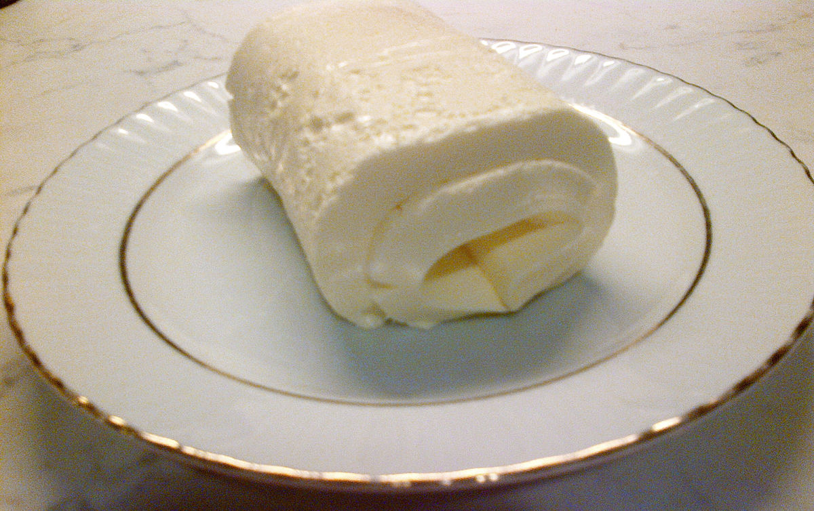

Home
Kaymak

About
Kaymak is a rich, creamy dairy spread traditionally made by slowly heating milk and cream until a thick, silky layer forms on the surface. This layer is gently collected and rested so it develops a soft, slightly elastic texture and a mildly sweet, milky flavor. Kaymak is commonly enjoyed at breakfast or dessert, often served with bread, honey, or jam.
Ingredients
- 4 cups whole milk (preferably not ultra-pasteurized)
- 1 cup heavy cream
Steps
- Pour the milk and cream into a wide, shallow pot or pan and gently heat over low heat without stirring.
- Allow the mixture to slowly heat until it just begins to steam and a thick skin forms on the surface; do not let it boil.
- Reduce the heat to very low and let it simmer gently for about 1–2 hours, allowing the surface layer to thicken.
- Remove the pot from heat and let it cool completely at room temperature, then refrigerate for several hours or overnight.
- Carefully lift the thickened cream layer from the top and transfer it to a container.
- The kaymak is ready to serve or can be stored in the refrigerator for a few days.